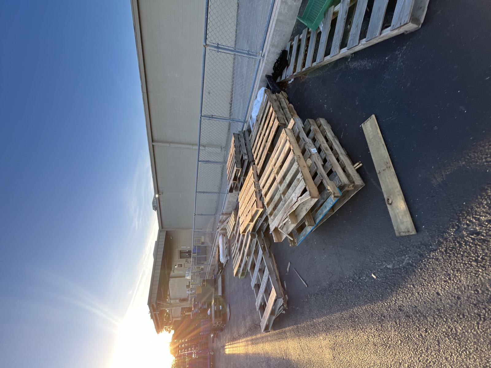

Apr 15

✎ HT stamp good, MB never — and budget a 30–40% waste margin from day one.Pallets were collected and run against the safety flow before anything came home: IPPC stamp (HT good, MB never), no rental colors, no contamination, no chemical smell. The project begins as raw, free material — all of its value is added by the work that follows.
Reclaimed wood has more unusable sections than new lumber, so the haul was sized with a 30–40% margin for waste from the start.